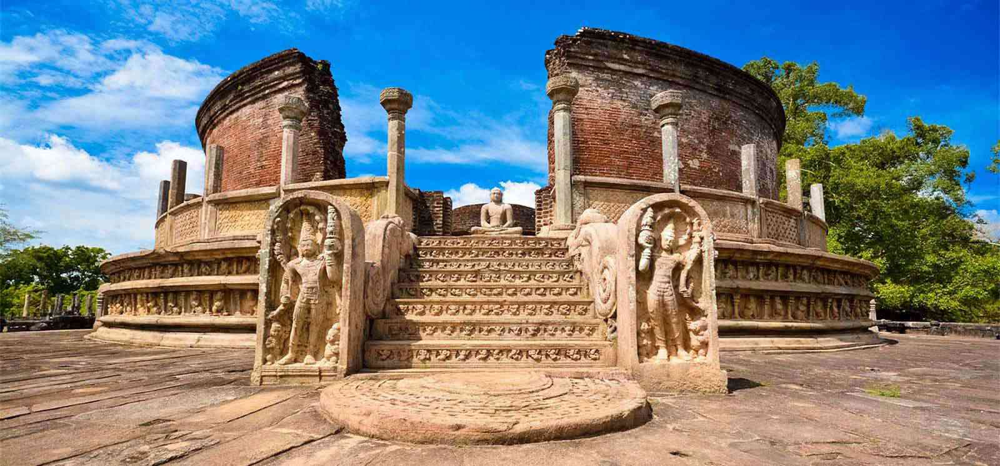

Tour Start
Title description : Any months of the year
12 nights/13 days
Negombo / Anuradhapura
After Breakfast visit St. Mary’s church in Negombo and thereafter proceed to Munneswaram.
(Negombo – Munneswaram Approx. 1 Hr.)
Visit Munneswaram Hindu Temple.
Munneswaram temple is an important regional Hindu temple complex in Sri Lanka. It has been in existence at least since 1000 CE, although myths surrounding the temple associate it with the popular Indian epic Ramayana, and its legendary hero-king Rama. The temple is one of the ancient Pancha Ishwarams dedicated to Shiva in the region. This Hindu temple is also known as a tourist spot.
On completion transfer to Anuradhapura. Lunch at local restaurant – Payment direct by the client.
(Munneswaram to Anuradhapura Approx.3 ½ hrs)
Check in to Hotel.
visit Anuradhapura ancient city including Jaya Sri Maha Bodhi and Isurumuniya.
Anuradhapura was made the first capital of Sri Lanka by King Pandukhabaya in the 4th century and it so remained till the 11th century BC known as the longest serving capitals, famous in ancient and modern times. Anuradhapura is a beautiful picturesque town located along a river bank which is popular for the fascinating ancient ruins and deep rooted Buddhist culture.
There is plenty to see in Anuradhapura from ancient trees like the Sri Maha Bodhi, the oldest tree in the world, to ancient monasteries and ruins of historical importance. Anuradhapura is one of the eight historical heritage sites in Sri Lanka.
Journey
Title description : Enjoy yourself
Kandy
Breakfast at the hotel and day spent at leisure or activities around Kandy.
Activities in Kandy:
Thereafter proceed to the beautiful and historical city Kandy.
Lunch at local restaurant in Kandy – Payment direct by the client.
Then Check in to hotel and relax
Evening Visit Kandy Temple of tooth and see a Cultural Dance
Kandy the popular charming hill capital of Sri Lanka is surrounded by hills, valleys,rivers, lakes and waterfalls.
It is the cultural center of the island and a UNESCO heritage city. The sacred tooth relic of Lord Buddha is enshrined at the
Dalada Maligawa, the temple of the tooth. While in Kandy, a visit to the Royal Botanical Gardens is a must where you can
see around 4000 species of plants. The arts and crafts center in Kandy, the main Buddhist monasteries Malwatta and Asgiriya
Monasteries are places that must be visited.
Kandy is a great place for souvenir shopping and to learn about its rich culture and history.
Day 8
Kataragama / Colombo
After breakfast engage in a City Tour of Kataragamma proceed to Colombo.
Check in to hotel and relax.
Evening do a Colombo City tour
Colombo city tour including Gangaramaya Temple, Old Parliament
St. Anthony’s Church, Independent Square, Galle Face Green, BMICH and Shopping malls.
The busiest place in Sri Lanka is Colombo, the commercial capital of the country. Colombo is a beautiful city with modern high rise buildings amidst old colonial ones making it a picturesque place. Colombo offers a lot for the tourists including the National Museum and the Zoological Gardens in Dehiwala which are worth a visit. Galle Face Green in Colombo, the favourite hangout spot for locals and tourists alike overlooking the beautiful Indian Ocean and surrounded by tall beautiful buildings. Viharamaha Devi Park with tall flowering trees which bloom during April is a quiet serene place in the middle of the busy city. Colombo is also a shopper’s paradise with posh shopping malls and the famous Pettah market.
Overnight stay in Colombo